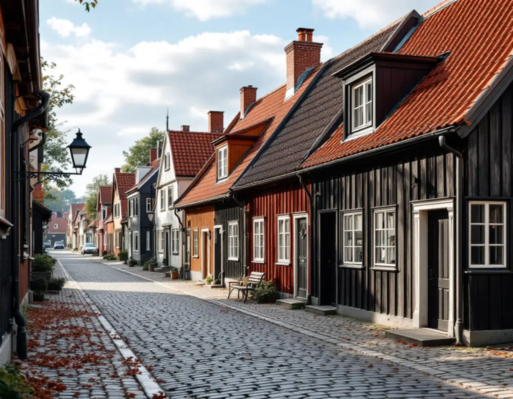
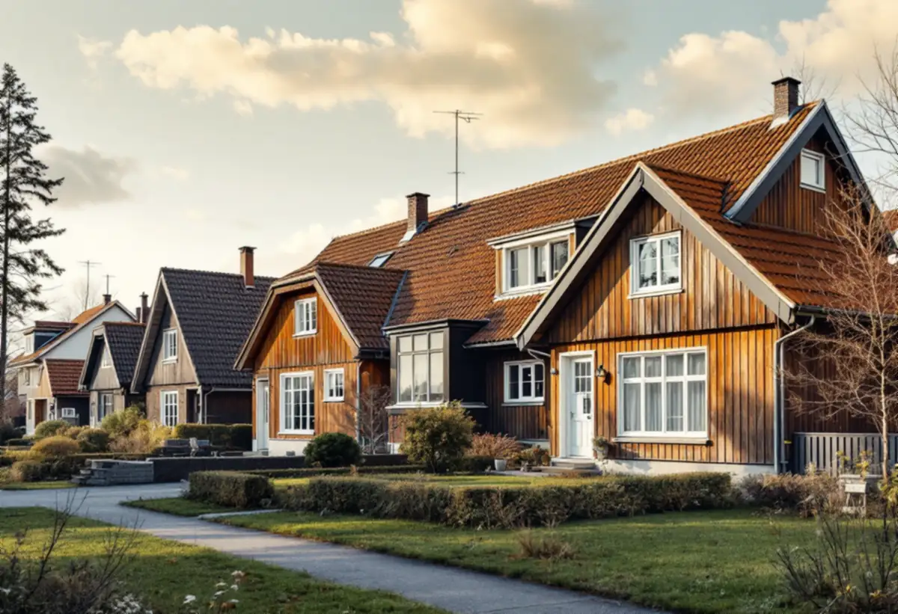

Takbyte i Sigtuna
Byte av tegel-, betong- och plåttak.
Takbyte i Sigtuna →Sigtuna kommun rymmer både en av de första städerna i det dåvarande Sverige och Märsta, som växte i takt med Arlanda. Vi är takläggare i Sigtuna för villor och radhus i bland annat Märsta, Arenberga, Norrbacka, Steninge, Ekilla, Rosersberg och Sigtuna stad.

Märsta hade omkring 3 000 invånare 1960 och över 10 000 bara fem år senare. Under 1960-talet byggdes kedjehus och villor i Arenberga, på 1970-talet villor och radhus i Norrbacka, och även Steninge och Ekilla domineras av radhus och villor. Även centrala Märsta, som från början mest bestod av villor på stora tomter, har förtätats med tiden.
Husen från de åren har ofta pannor på sitt ursprungliga underlag, och i radhuslängorna är taken som regel lika gamla. Det betyder att en hel länga ofta når slutet av takets livslängd samtidigt, och att det kan vara klokt att planera tillsammans med grannarna.
Rosersberg ligger mellan Märsta och Upplands Väsby, vid Mälaren och Fysingen, och villastaden där växer fortfarande. I Sigtuna stad ligger husen i sluttningen ner mot Mälaren, och taklandskapet domineras enligt kommunens bevarandeplan av rött lertegel med inslag av plåttak. Hus nära vattnet och på höjderna får mer vind än de som ligger skyddat i kvarteren.
Oavsett om du behöver ett komplett takbyte eller en riktad renovering ger vi en tydlig bedömning och offert. Vi arbetar även i grannområden – se alla områden vi arbetar i.

På 1960–70-talens radhus och villor i Märsta är det oftast underlagspapp, läkt och plåtdetaljer som nått slutet av sin livslängd, även när pannorna fortfarande ser hela ut. Läckor börjar gärna vid skorstenar, ränndalar och mellan grannhusens tak.
I Sigtuna stad är det andra frågor: gamla lertegelpannor som behöver kompletteras, murade skorstenar och plåtdetaljer som ska utformas som förr.
I Rosersberg och andra delar med nyare villor är det sällan underlaget som är problemet. Där handlar uppdragen oftare om plåtdetaljer, avvattning, takfönster och anslutningar vid tillbyggnader.
Bygglov hanteras av Sigtuna kommun. På kommunens sida om tak står att bygglov krävs för nytt takmaterial eller ny kulör om byggnaden är särskilt kulturhistoriskt värdefull eller om detaljplan eller områdesbestämmelser har skyddsbestämmelser. För vissa skyddade byggnader kan det behövas en anmälan redan för en omläggning, även utan byte av material eller färg.
Vill du vara säker kan du söka frivilligt bygglov via kommunens e-tjänst. Ansökan ska innehålla situationsplan, förslag till kontrollplan och ritningar.
Kommunen påpekar att även byggnader som inte är utpekade i något program kan vara så värdefulla att särskild hänsyn behövs. Är du osäker om ditt hus kan du skicka in bilder till kommunen och få en bedömning innan du väljer material.
Sigtuna grundades omkring år 980 och är riksintresse för kulturmiljövården. Kommunens bevarande- och förnyelseplan från 2019 anger att tegeltak i regel ska ersättas med likadana pannor, att ett enkupigt lertegel inte ska bytas mot tvåkupigt och att gamla pannor är en tillgång som i första hand ska kompletteras.
Planen säger också att plåtklädda vindskivor är en modern företeelse och att murade eller putsade skorstenar är att föredra framför plåtklädda. Läs mer om kulturmiljön på kommunens sida om att bygga i kulturmiljö, och om hur vi arbetar med takrenovering av äldre tak.
Enligt bevarandeplanen är solceller bygglovspliktiga inom riksintresset, och i centrala staden och på Malmen ska panelerna stämma med takets färg. Längs en del av Stora gatan får det inte finnas synliga solceller på takfall mot gatan, så det är bra att ta med i planeringen om taket ska bytas.
Arlanda ligger i kommunen och är riksintresse enligt miljöbalken. Enligt kommunens sida om flygbuller begär kommunen ett yttrande från Swedavia när någon vill bygga nytt eller bygga till inom influensområdet.
Kommunens sida nämner nybyggnad och tillbyggnad, inte takbyte. Planerar du samtidigt en tillbyggnad är det bra att räkna med Swedavias yttrande i tidplanen.
Kommunen skriver att byggnation inom bullerstört område i vissa fall kan accepteras om huset får bullerbegränsande åtgärder, till exempel avskärmning eller isolering.
Byte av tegel-, betong- och plåttak.
Takbyte i Sigtuna →Riktade åtgärder som förlänger takets liv.
Takrenovering i Sigtuna →Bedömning av skick inför beslut.
Takbesiktning i Sigtuna →Nytt ytskydd på plåttak.
Takmålning i Sigtuna →Skonsam tvätt och mossbehandling.
Taktvätt i Sigtuna →Nytt plåttak och plåtarbeten.
Plåttak i Sigtuna →Vi utgår från Bromma och tar uppdrag i hela Sigtuna kommun, från Märsta och Rosersberg till Sigtuna stad. Vi har inget kontor i kommunen men samlar besök så att planeringen blir smidig.
Läs mer om tak på villa eller jämför takbyte och takrenovering innan du bestämmer dig.
Vi arbetar även i Upplands Väsby.
Takläggare i Upplands Väsby →Vi arbetar även i Vallentuna.
Takläggare i Vallentuna →Vi arbetar även i Sollentuna.
Takläggare i Sollentuna →Vi arbetar även i Järfälla.
Takläggare i Järfälla →